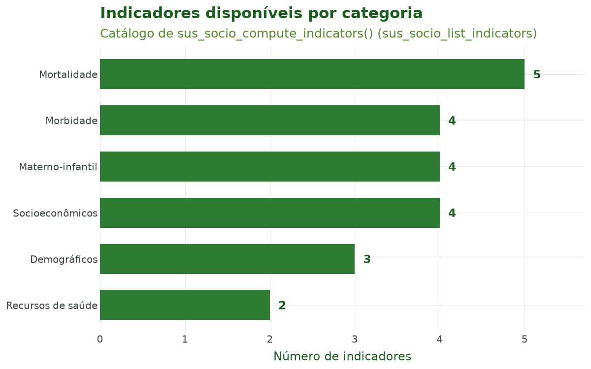
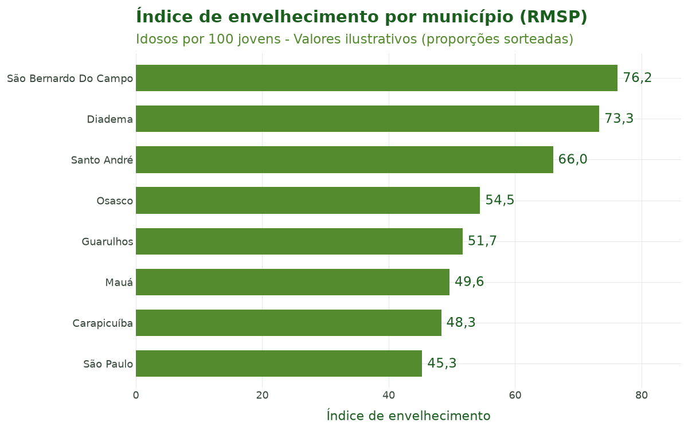
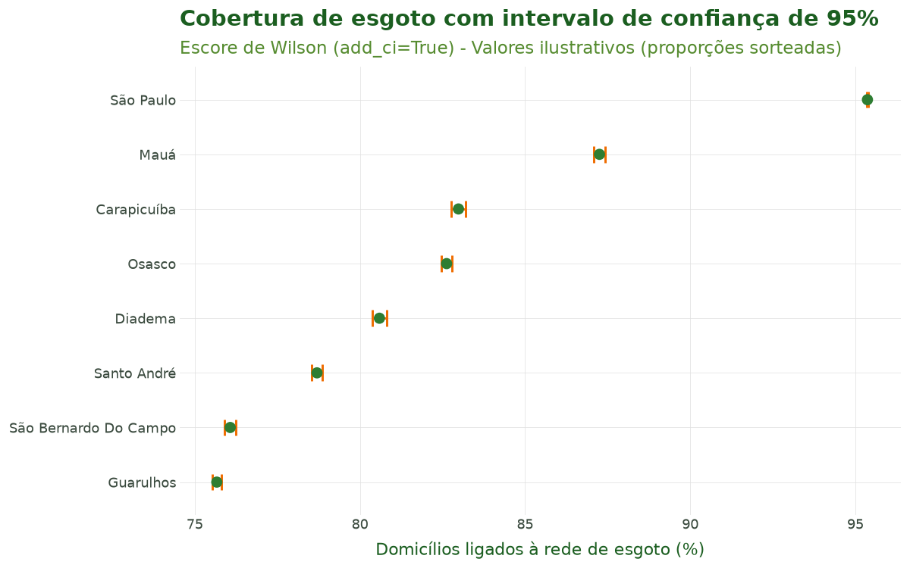
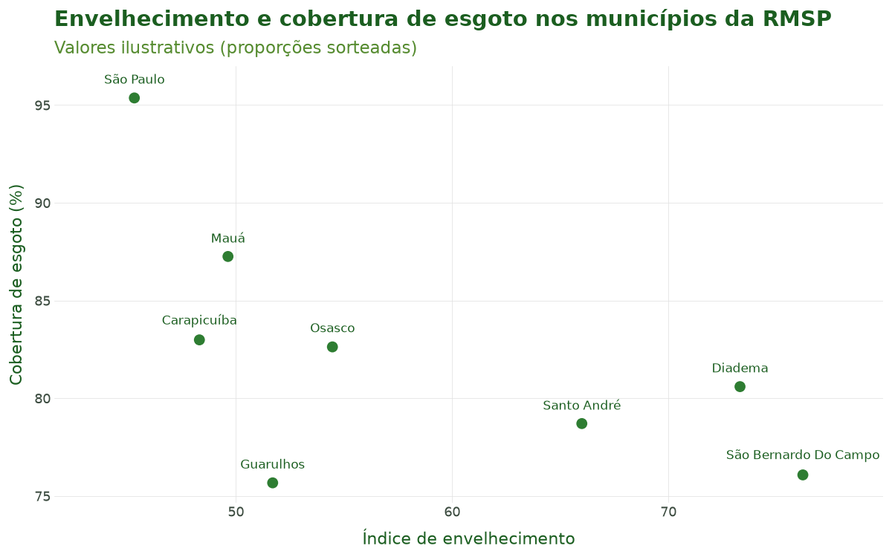

Tutorial 6: Vínculo de Dados Socioeconômicos¶
← Voltar para a Trilha do Pipeline
Objetivo¶
Ao final deste tutorial você será capaz de vincular variáveis do Censo Demográfico brasileiro aos dados de saúde já espacializados e calcular indicadores socioeconômicos e epidemiológicos padronizados. Você aprenderá a:
- descobrir quais variáveis do censo existem com
sus_census_select(); - vincular o censo, já agregado por município, aos dados de saúde com
sus_census(); - consultar o catálogo completo de indicadores com
sus_socio_list_indicators(); - calcular indicadores como envelhecimento, dependência e cobertura de saneamento — com
intervalos de confiança — usando
sus_socio_compute_indicators().
O vínculo socioeconômico é a sexta etapa do pipeline do climasus4py. Ela parte dos dados que
já passaram pela junção espacial (Tutorial 5), em que cada linha tem o seu município.
Contexto científico¶
Estudos de clima e saúde raramente podem tratar a população como homogênea. A vulnerabilidade social — pobreza, baixa escolaridade, saneamento precário, estrutura etária envelhecida — modula a relação entre exposição ambiental (temperatura, poluição) e desfechos de saúde, atuando tanto como confundidor quanto como modificador de efeito (Gouveia, Hajat & Armstrong, 2003; Hajat, O'Connor & Kosatsky, 2010). Idosos em domicílios sem infraestrutura adequada, por exemplo, sofrem mais durante ondas de calor.
No Brasil, a fonte oficial dessas variáveis é o Censo Demográfico do IBGE, distribuído em
formato aberto pelo projeto censobr (Pereira & Barbosa, 2023). O climasus4py usa o Censo 2010
já agregado por município a partir desses microdados e guardado no pacote climasus-data:
sus_census() só precisa ligar essa tabela aos dados de saúde pelo código do município.
A partir das variáveis do censo, sus_socio_compute_indicators() calcula um conjunto de
indicadores padronizados (demográficos, socioeconômicos, de mortalidade, morbidade, saúde
materno-infantil e recursos de saúde), cada um com sua fórmula, multiplicador e método
de incerteza declarados em um catálogo interno.
Aviso metodológico (viés ecológico). Indicadores municipais descrevem o agregado, não o indivíduo: associações observadas entre a vulnerabilidade média de um município e seus desfechos de saúde não se transferem automaticamente para pessoas (falácia ecológica). A escala de agregação também importa — o mesmo fenômeno pode mudar de sinal conforme a unidade (problema da unidade de área modificável, MAUP). Use estes indicadores como covariáveis de área, não como atributos individuais.
Caso condutor. Investigamos a temperatura e os desfechos de saúde em idosos (60+) na Região Metropolitana de São Paulo, 2014–2019. No Tutorial 5 ligamos a série de óbitos respiratórios aos oito municípios da RMSP. Aqui vinculamos o Censo 2010 e calculamos indicadores de vulnerabilidade (envelhecimento, dependência, cobertura de esgoto e de água) que servirão de covariáveis e modificadores de efeito na modelagem clima–saúde dos próximos tutoriais.
Dados utilizados¶
| Item | Valor | Papel no caso |
|---|---|---|
| Entrada | caso_espacial (Tutorial 5) |
Óbitos respiratórios de idosos por mês e município (RMSP) |
| Censo | Censo 2010, agregado por município (climasus-data) |
População de cada município |
| Chave de vínculo | Código do município (6 dígitos) | Liga saúde × censo |
| Indicadores | Envelhecimento, dependência, esgoto, água | Vulnerabilidade municipal |
Atenção: os quatro indicadores usam valores ilustrativos. O Censo agregado traz, para cada município, a população e somas de variáveis dos microdados (idades, rendas…), mas não as contagens que esses indicadores exigem: quantos idosos, jovens e pessoas em idade ativa, e quantos domicílios estão ligados à rede de esgoto e de água. Por isso, no Passo 4, essas contagens são sorteadas em torno da população real de cada município, apenas para mostrar como a função funciona. Os números dos indicadores (Tabela 2 e Figuras 2 a 4) não descrevem a RMSP; a população da Tabela 2 é a real do Censo 2010.
Pipeline completo¶
Os blocos abaixo reproduzem o que o script
tools/tutoriais/tutorial_06_socioeconomico.py
executa. Comece carregando o pacote e refazendo, a partir do cache, os passos dos tutoriais
anteriores:
import climasus4py as cs
import numpy as np
obitos = cs.sus_data_import(system="SIM-DO", uf="SP", year=[2014, 2015, 2016, 2017, 2018, 2019])
obitos_limpo = cs.sus_data_clean_encoding(obitos)
obitos_padr = cs.sus_data_standardize(obitos_limpo, lang="pt")
RMSP = ["São Paulo", "Guarulhos", "São Bernardo do Campo", "Santo André",
"Osasco", "Mauá", "Carapicuíba", "Diadema"]
resp_idosos = cs.sus_filter(obitos_padr, groups="respiratory", age_min=60, city=RMSP)
obitos_vars = cs.sus_data_create_variables(
resp_idosos,
age_breaks=[60, 70, 80, 999],
age_labels=["60-69", "70-79", "80+"],
climate_region="sudeste",
lang="pt",
)
serie = cs.sus_data_aggregate(
obitos_vars,
time_unit="month",
group_by=["faixa_etaria"],
join_col="residencia",
lang="pt",
)
caso_espacial = cs.sus_spatial_join(serie, geo_level="municipality", join_col="residencia", lang="pt")
Passo 1 — Descobrir variáveis do censo (sus_census_select())¶
Antes de vincular o censo, vale conhecer as variáveis que ele tem. Em uso interativo,
output="browser" abre uma interface HTML pesquisável; em scripts, prefira output="codes", que
retorna a lista de códigos sem abrir o navegador:
codigos = cs.sus_census_select(
dataset="population", # "all", "population", "households", "families", ...
year=2010, # Censo 2010
output="codes", # "browser" (padrão), "console" ou "codes"
lang="pt",
verbose=False,
)
codigos[:6]
Passo 2 — Vincular o censo (sus_census())¶
sus_census() acrescenta a cada linha as variáveis do Censo do seu município. Informe o ano do
censo em year e, em variables, as colunas que quer trazer — aqui, a população estimada
(sample_weight_sum, a soma dos pesos amostrais) e o número de pessoas entrevistadas na amostra
(n_records):
caso_censo = cs.sus_census(
caso_espacial,
year=2010,
variables=["sample_weight_sum", "n_records"],
)
O número de linhas não muda: o censo é ligado pelo código do município, e cada linha de saúde recebe os valores do seu município.
Passo 3 — Consultar o catálogo de indicadores (sus_socio_list_indicators())¶
Antes de calcular, inspecione o que está disponível. A função não depende de internet e retorna
uma tabela com id, name, category, required_cols, formula, multiplier, unit,
uncertainty_method e source:
catalogo = cs.sus_socio_list_indicators(lang="pt")
# Filtrar por categoria, se desejar:
cs.sus_socio_list_indicators(lang="pt", category="mortality")
Passo 4 — Calcular indicadores (sus_socio_compute_indicators())¶
Os indicadores são definidos em nomes de fórmula (como pop_elderly, total_hh). Quando as
colunas dos seus dados têm outros nomes, use col_mapping para ligar cada nome de fórmula à
coluna real.
Como o Censo agregado não traz as contagens desses quatro indicadores (veja o aviso em Dados utilizados), montamos uma tabela com uma linha por município e sorteamos as contagens em torno da população real:
# Uma linha por município, com a população real do Censo 2010
censo = caso_censo.df()
municipios = censo.drop_duplicates("code_muni_7")[["code_muni_7", "spatial_name", "sample_weight_sum"]]
municipios = municipios.reset_index(drop=True)
populacao = municipios["sample_weight_sum"]
# Contagens ILUSTRATIVAS: proporções sorteadas em torno da população real
sorteio = np.random.default_rng(2026)
n = len(municipios)
municipios["idosos"] = (populacao * sorteio.uniform(0.09, 0.16, n)).round()
municipios["jovens"] = (populacao * sorteio.uniform(0.16, 0.24, n)).round()
municipios["ativos"] = populacao - municipios["idosos"] - municipios["jovens"]
municipios["domicilios"] = (populacao / sorteio.uniform(2.8, 3.4, n)).round()
municipios["domicilios_esgoto"] = (municipios["domicilios"] * sorteio.uniform(0.70, 0.99, n)).round()
municipios["domicilios_agua"] = (municipios["domicilios"] * sorteio.uniform(0.85, 0.99, n)).round()
caso_socio = cs.sus_socio_compute_indicators(
municipios,
indicators=["aging_index", "dependency_ratio",
"sewage_connection_rate", "water_connection_rate"],
col_mapping={
"pop_elderly": "idosos", # nome de fórmula -> coluna real
"pop_young": "jovens",
"pop_working": "ativos",
"total_hh": "domicilios",
"hh_sewage": "domicilios_esgoto",
"hh_water": "domicilios_agua",
},
confidence_level=0.95, # IC de Poisson (taxas) / Wilson (proporções)
add_ci=True, # adiciona as colunas ind_<id>_low / ind_<id>_high
lang="pt",
)
Cada indicador calculado vira uma coluna ind_<id> (ex.: ind_aging_index) e — quando o método
de incerteza não é "none" e add_ci=True — também ind_<id>_low e ind_<id>_high. Se
indicators não for informado, a função detecta automaticamente todos os indicadores cujas
colunas exigidas estão presentes (depois do col_mapping); indicadores sem as colunas necessárias
são pulados com aviso.
Ao final desta etapa temos caso_censo — a série de saúde com as variáveis do Censo — e
caso_socio, os indicadores por município.
Características das funções¶
sus_census_select()¶
Explorador das variáveis do censo.
| Argumento | Essencial? | Descrição |
|---|---|---|
dataset |
recomendado | "all" (padrão), "population", "households", "families", "mortality" ou "emigration" |
year |
opcional | 2010 (padrão) |
output |
recomendado | "browser" (HTML interativo, padrão), "console" ou "codes" (lista) |
lang |
opcional | "pt" (padrão), "en", "es" |
verbose |
opcional | Mensagens informativas |
Retorno: com "codes", uma lista com os códigos das variáveis; com "browser" ou
"console", uma tabela com código, nome, conjunto de dados, tipo e categoria de cada variável
(além de abrir ou imprimir a interface).
sus_census()¶
Liga as variáveis do Censo, agregadas por município, aos dados de saúde.
| Argumento | Essencial? | Descrição |
|---|---|---|
rel |
sim | Dados de saúde com uma coluna de código municipal (agregados ou já com geometria) |
year |
recomendado | Ano do censo. Sem ele, usa o mais recente instalado — o Censo 2022, que traz só população e coordenadas — e avisa |
variables |
recomendado | Colunas do censo a trazer; sem ele, traz todas |
census |
opcional | Uma tabela de censo própria, com a coluna municipality_code, no lugar da do climasus-data |
Retorno: os dados de saúde com as colunas do censo e o estágio census registrado. As
variáveis do Censo 2010 são a soma de cada variável dos microdados por município (por isso o
sufixo _sum); sample_weight_sum, a soma dos pesos amostrais, é a população estimada.
sus_socio_compute_indicators()¶
Calcula indicadores padronizados sobre as colunas presentes, com intervalos de confiança opcionais.
| Argumento | Essencial? | Descrição |
|---|---|---|
df |
sim | Tabela com as colunas que os indicadores exigem (por exemplo, a saída de sus_census()) |
indicators |
opcional | Lista de IDs; sem ela, calcula todos os que as colunas permitem |
col_mapping |
recomendado | Dicionário: nome de fórmula → coluna real (ex.: {"total_hh": "domicilios"}) |
confidence_level |
opcional | Nível de confiança (padrão 0.95) |
add_ci |
opcional | True (padrão) adiciona ind_<id>_low e ind_<id>_high |
lang / verbose |
opcional | Idioma e mensagens |
Retorno: os dados com as colunas ind_<id> (e _low/_high quando houver intervalo) e o
tipo indicators registrado em attrs["sus_meta"]. Cada indicador é uma razão multiplicada pelo
multiplier do catálogo (por exemplo, idosos ÷ jovens × 100 no índice de envelhecimento). Os
intervalos de confiança seguem o uncertainty_method: Poisson exato para taxas de eventos
(mortalidade, incidência, internações), escore de Wilson para proporções (coberturas) e nenhum
para razões compostas e índices diretos (como dependência e Gini).
sus_socio_list_indicators()¶
Lista o catálogo completo de indicadores. Não depende de internet.
| Argumento | Descrição |
|---|---|
lang |
Idioma dos nomes: "pt" (padrão), "en", "es" |
category |
Filtra por categoria (ex.: "demographic", "mortality"); sem ela, todas |
Retorno: uma tabela com id, name, category, required_cols, formula, multiplier,
unit, uncertainty_method e source.
Resultados ilustrados¶
Tabela 1. Amostra do catálogo de indicadores (sus_socio_list_indicators()): os quatro do
caso condutor e outros quatro de categorias diferentes.
| id | Nome | Categoria | Fórmula | Multiplicador | Incerteza |
|---|---|---|---|---|---|
aging_index |
Índice de Envelhecimento | Demográficos | pop_elderly / pop_young |
100 | none |
dependency_ratio |
Razão de Dependência | Demográficos | (pop_young + pop_elderly) / pop_working |
100 | none |
sewage_connection_rate |
Cobertura de Esgoto | Socioeconômicos | hh_sewage / total_hh |
100 | binomial |
water_connection_rate |
Cobertura de Água Encanada | Socioeconômicos | hh_water / total_hh |
100 | binomial |
urbanization_rate |
Taxa de Urbanização | Demográficos | pop_urban / pop_total |
100 | binomial |
homicide_rate |
Taxa de Homicídios | Mortalidade | deaths_homicide / pop_total |
100.000 | poisson |
respiratory_hospitalization_rate |
Taxa de Internações Respiratórias | Morbidade | hosp_resp / pop_total |
10.000 | poisson |
beds_per_capita |
Leitos por Mil Habitantes | Recursos de saúde | cnes_beds / pop_total |
1.000 | none |

Figura 1. Número de indicadores disponíveis por categoria no catálogo de
sus_socio_compute_indicators() — 22 ao todo. As categorias cobrem demografia, vulnerabilidade
socioeconômica, mortalidade, morbidade, saúde materno-infantil e recursos de saúde.
Tabela 2. Indicadores calculados por município, do mais ao menos envelhecido. A população é a real do Censo 2010; os indicadores são ilustrativos (contagens sorteadas, veja Dados utilizados).
| Município | População (Censo 2010) | Envelhecimento | Dependência | Esgoto (%) | IC 95% esgoto | Água (%) |
|---|---|---|---|---|---|---|
| São Bernardo Do Campo | 765.463 | 76,2 | 54,9 | 76,1 | 75,90–76,24 | 97,6 |
| Diadema | 386.089 | 73,3 | 46,8 | 80,6 | 80,37–80,81 | 93,5 |
| Santo André | 676.407 | 66,0 | 57,6 | 78,7 | 78,53–78,87 | 91,1 |
| Osasco | 666.740 | 54,5 | 48,3 | 82,6 | 82,46–82,78 | 92,9 |
| Guarulhos | 1.221.979 | 51,7 | 56,3 | 75,7 | 75,54–75,80 | 89,8 |
| Mauá | 417.064 | 49,6 | 53,7 | 87,3 | 87,08–87,42 | 98,3 |
| Carapicuíba | 369.584 | 48,3 | 45,9 | 83,0 | 82,77–83,19 | 96,2 |
| São Paulo | 11.253.503 | 45,3 | 48,9 | 95,4 | 95,34–95,38 | 89,5 |

Figura 2. Ranking municipal pelo índice de envelhecimento (idosos por 100 jovens), com valores ilustrativos. Com dados reais, municípios mais envelhecidos tendem a concentrar maior risco frente a extremos de temperatura.

Figura 3. Cobertura de esgoto por município com intervalo de confiança de 95% (escore de
Wilson), como produzido por add_ci=True, com valores ilustrativos. A barra de erro comunica a
incerteza da proporção; com centenas de milhares de domicílios no denominador, o intervalo fica
muito estreito.

Figura 4. Relação entre envelhecimento e cobertura de esgoto nos municípios da RMSP, com valores ilustrativos. Com dados reais, cruzar vulnerabilidade demográfica e de infraestrutura ajuda a levantar hipóteses de confundimento e modificação de efeito na relação temperatura–saúde dos próximos tutoriais.
Referências¶
- Pereira, R. H. M., & Barbosa, R. J. (2023). censobr: Download Data from Brazil's Population Census. R package version 0.4.0. https://CRAN.R-project.org/package=censobr. DOI: 10.32614/CRAN.package.censobr.
- Gouveia, N., Hajat, S., & Armstrong, B. (2003). Socioeconomic differentials in the temperature–mortality relationship in São Paulo, Brazil. International Journal of Epidemiology, 32(3), 390–397.
- Hajat, S., O'Connor, M., & Kosatsky, T. (2010). Health effects of hot weather: from awareness of risk factors to effective health protection. The Lancet, 375(9717), 856–863.
- IBGE — Instituto Brasileiro de Geografia e Estatística. Censo Demográfico 2010. Rio de Janeiro: IBGE.